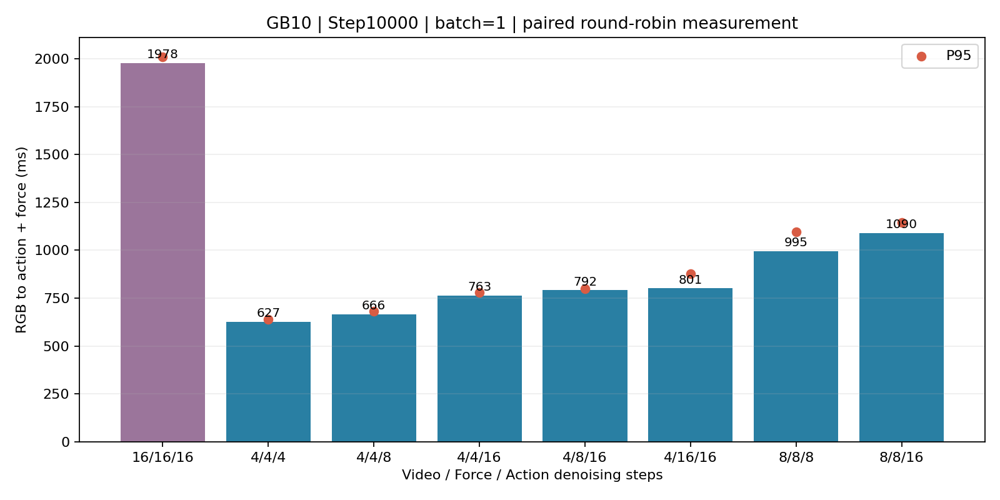
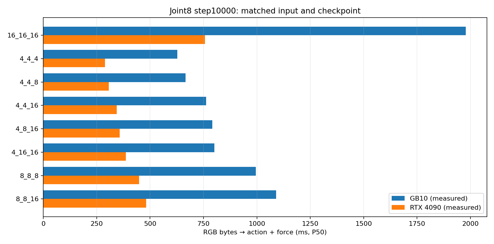

Video / Force / Action。优先真机验证 4/4/16；8/8/16 作为轨迹质量对照。所有素材为训练 episode 离线回放，不是闭环执行或成功率。
详细报告 · 27 组完整 CSV · 事件窗口 CSV

录制相机 / 16/16/16 / 4/4/16 / 8/8/16。固定种子；视频为慢放，真实时间见画面标注。
录制相机 / 16/16/16 / 4/4/16 / 8/8/16。固定种子；视频为慢放，真实时间见画面标注。
录制相机 / 16/16/16 / 4/4/16 / 8/8/16。固定种子；视频为慢放，真实时间见画面标注。
同一权重、输入和源码；16/16/16 基线 P50：GB10 1978 ms，4090 756 ms。推荐候选 4/4/16：GB10 763 ms，4090 344 ms。服务器数据上传另计；网络测试不含推理服务排队或机械臂通信。
